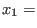
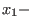
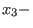
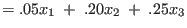
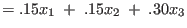

Next: Chemical Reactions (Stoichiometry) Up: Applications Previous: Probability and Stochastic Matrices Contents Index
A mathematical model is a set of equations which is used to mimic a real-world system. A model is considered accurate or successful if it can be used to predict the behavior of a system as situations change. The set of equations we use to determine voltages in an electrical circuit is one such model. It is considered very successful as it approximates voltage measurements in real circuits very closely and the variables which primarily affect the system are few and well understood. Models in economics are rarely so successful because the number of things which can affect a market system are enormous and inter-relationships can be very complex. Even simple models, though, can be useful to provide indicators of behavior of an economic system.
The Leontif Open Production Model (often referred to as Input-Output Analysis) can be used to describe gross relationships between various industrial sectors. In particular, it can be used to analyze how much output each sector must produce in order to meet consumption and export demands.
We start by dividing up an economy into a number of industries. For example, we might have transportation, steel, agriculture, entertainment, etc. Each industry uses resources which we call inputs. The outputs from each sector are the services or manufactured goods provided by the people and technologies associated with the industry. The inputs to each industry are made up in part by the outputs of other sectors. The agriculture industry, for example, uses the output of many industries, such as transportation (trucks, tractors), oil (fertilizers, motor fuel) and lumber (wood). We use an input-output matrix to summarize the interdependence among the industries we are interested in studying. An input-output matrix typically looks like:
The  entry of the matrix gives us the output from Sector
entry of the matrix gives us the output from Sector  that is used as input to Sector
that is used as input to Sector  . It is usually most
convenient to express the entries in monetary units, so that a column lists the dollar values of every input
the sector requires to produce $1 of output.
. It is usually most
convenient to express the entries in monetary units, so that a column lists the dollar values of every input
the sector requires to produce $1 of output.
The model must also take into account consumers who are not members of the represented industries. These consumer requirements are called the demand on the economy. This demand is represented by a column matrix indicating the amount required from each industry:

So let us suppose that an economy was composed of only three industries. We will say these are manufacturing, agriculture and energy. We will say that it takes $0.20 worth of manufactured goods, $0.25 worth of energy production and $0.05 of food inputs in order to produce $1.00 of agricultural produce. Furthermore, the manufacturing sector requires $0.15 of agricultural produce, $0.15 of its own product and $0.30 worth of energy to make $1.00 of manufactured goods. Finally, we stipulate that the energy industry requires $0.05 of agricultural output and $0.10 worth of manufactured products to stay in business and that it only consumes $0.01 of its own output. How much should each sector produce in order to meet the demand for exports of $2 billion of agricultural produce, $1 billion of manufactured goods and $3 billion worth of energy exports?
First, we set up the input-output matrix 

We let
We let  the amount the agricultural sector produces,
|  | [agricultural goods used in production] | |
| [manufactured goods used in production] | ||
|  | [energy used in production] |
| [agricultural goods used in production] |  | |
| [manufactured goods used in production] |  | |
| [energy used in production] |
then what we are asking for can be expressed simply as
We then equate this with our demand to get
To solve this equation, we substitute for
which finally gives
Applying arithmetic to our example then gives us

Applying Gauss-Jordan elimination gives us

Solving for our demand matrix
We round the results to two decimal places to get
In other words, we need the agriculture sector to produce $2.71 billion worth of produce, manufacturing $2.33 billion, and energy should output $4.42 billion in order to meet the demand.